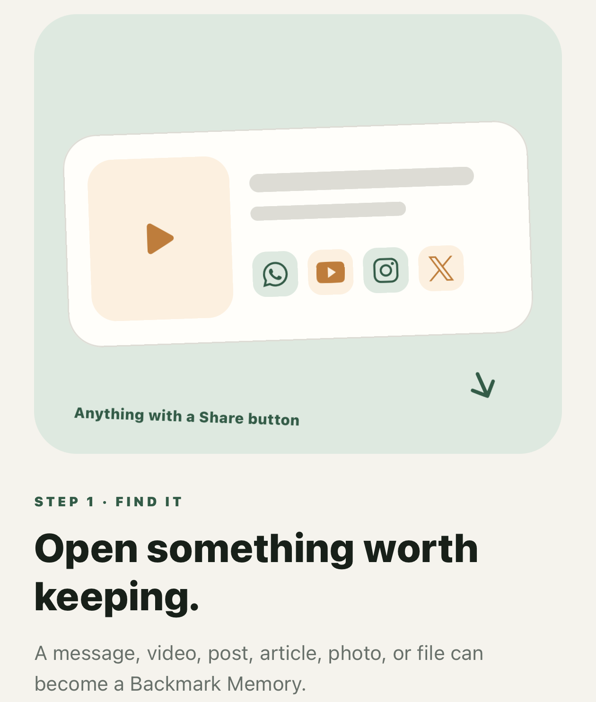
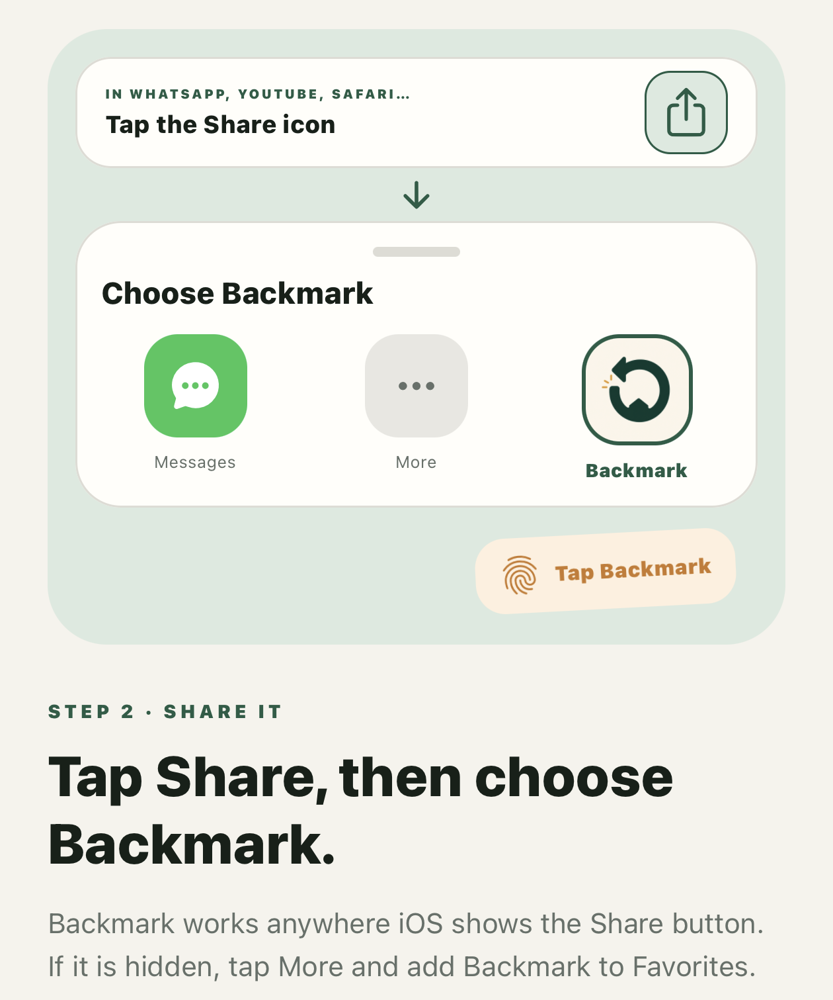
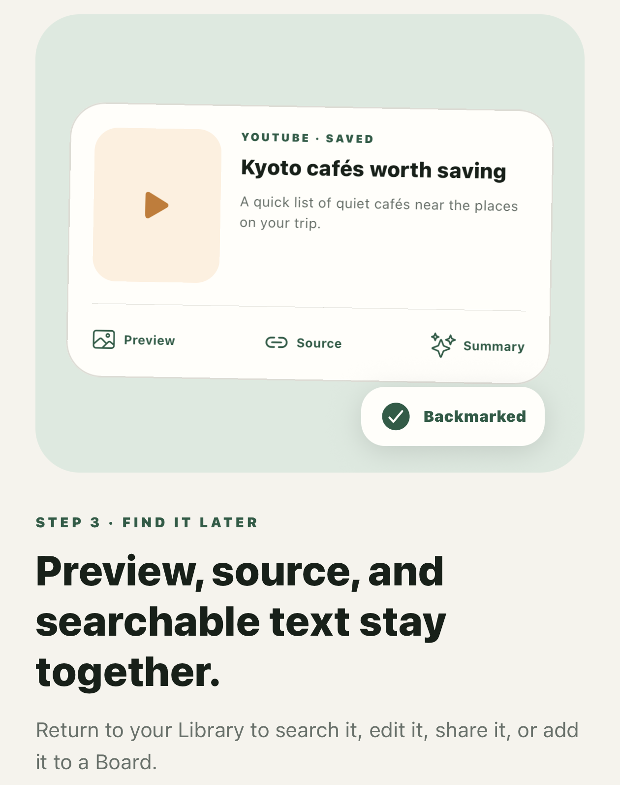
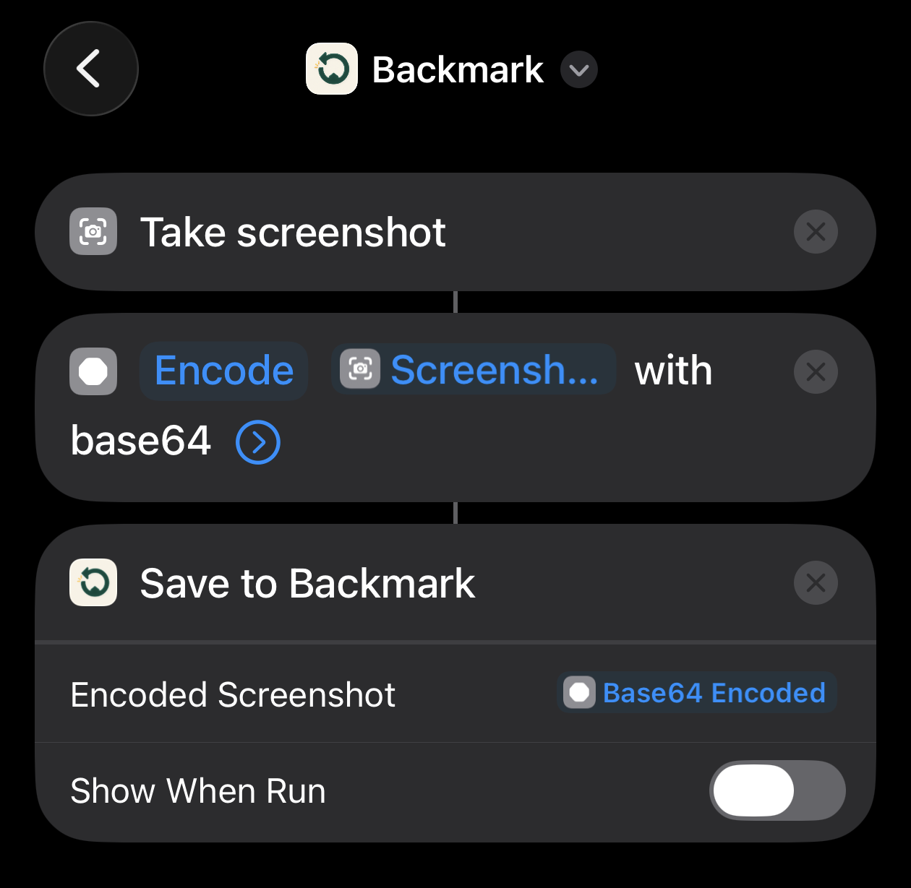

01
How to save
- Open a link, image, video, post, or file in another app.
- Tap the iOS Share button and choose Backmark. If it is hidden, tap More and add Backmark to Favorites.
- Return to Backmark and find the new Memory in your Library.
-

Step 1 Open something worth keeping. -

Step 2 Tap Share, then choose Backmark. -

Step 3 Find the saved Memory in your Library.
02
Saving a screenshot with Back Tap
APPLE SHORTCUTS
Start in the Shortcuts app
Open Apple’s Shortcuts app and build the “Remember Screen” shortcut shown below. If you cannot find the app, search your App Library for “Shortcuts.”
Then assign “Remember Screen” to Double Tap or Triple Tap in iPhone Settings. When it runs, Backmark stores the screenshot as the Memory preview and recognizes visible text on the device so it can be searched.
See Apple’s Back Tap instructions →

03
A source will not preview
Some websites prevent embedded previews. Your source link remains available, and you can open it in the original website or app.
04
Searchable screenshot text
Backmark uses Apple’s on-device text recognition for saved screenshots and images. Recognition can vary with image quality, text size, language, and contrast.
05
Deleting data
Delete one Memory from its detail screen, or choose “Delete all local data” in Profile. Deleting a Board does not delete its Memories.
06
Purchase and re-download
Backmark is a one-time App Store purchase with no subscription. To install it again on another compatible device, use the same Apple Account and download it from your App Store purchase history.